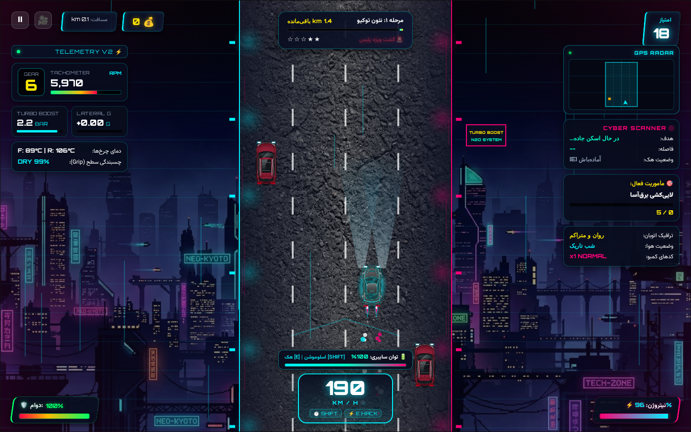
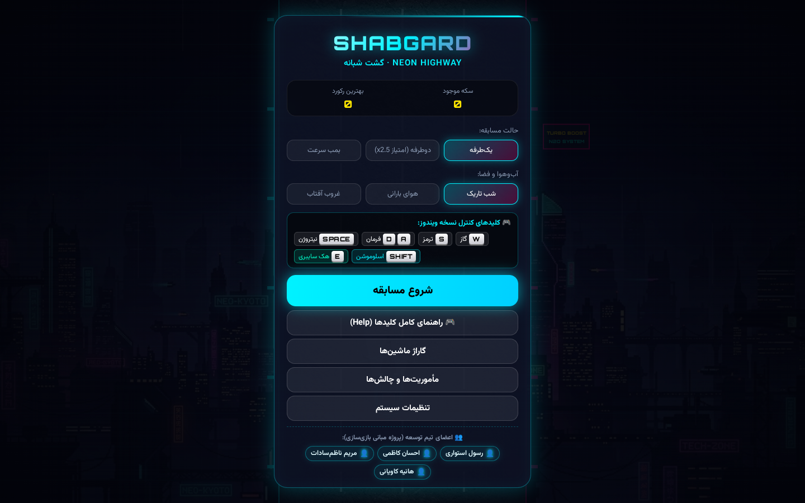
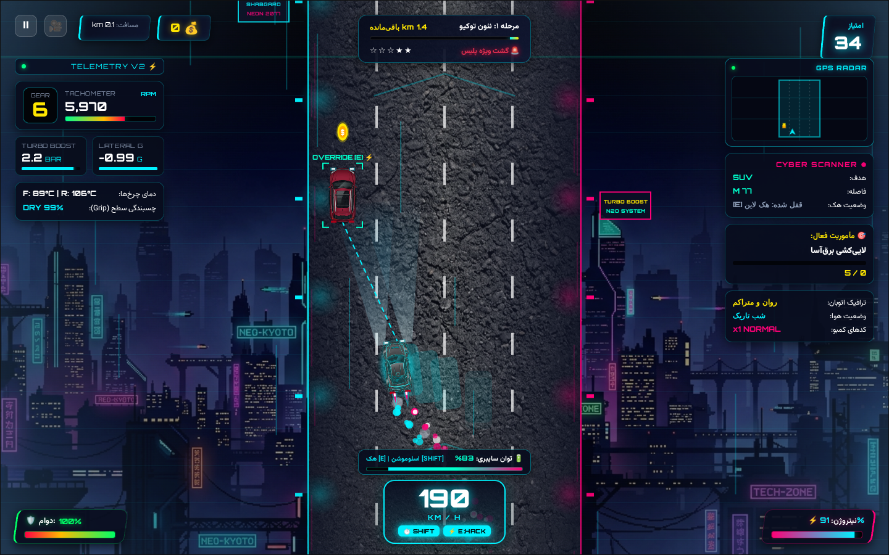
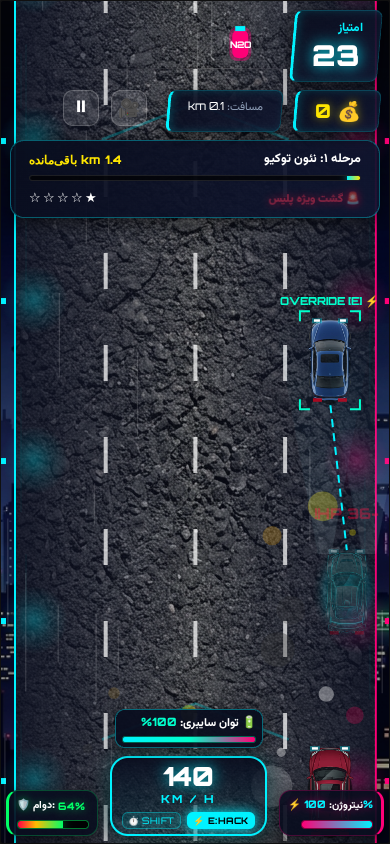
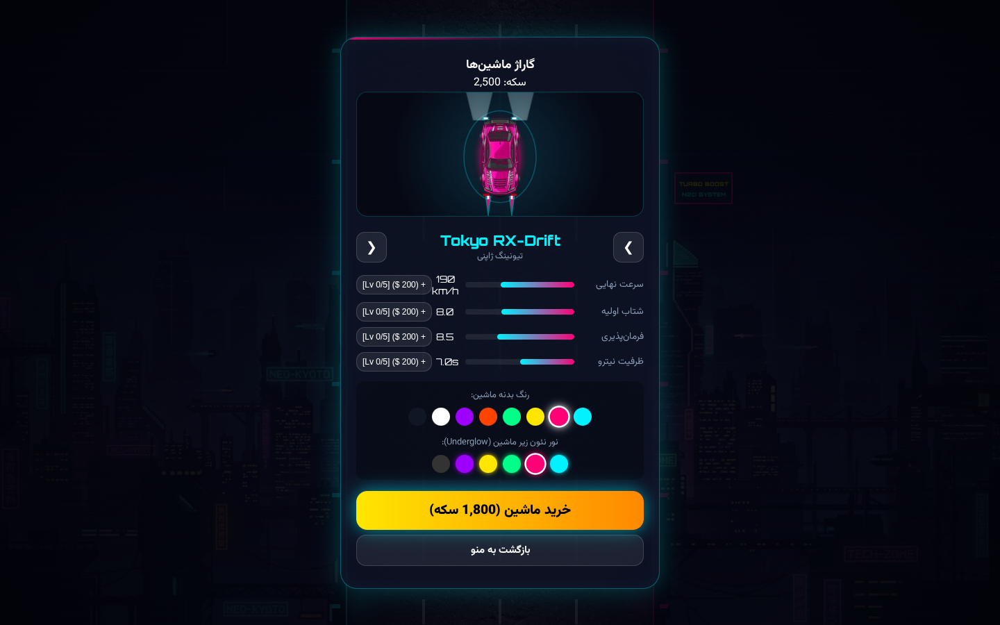
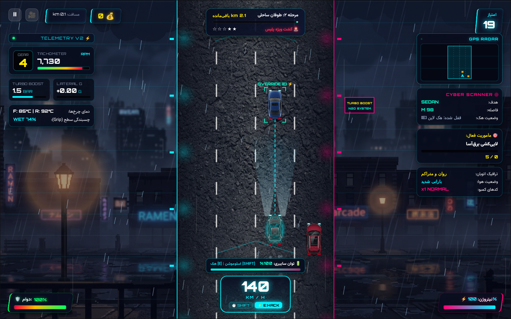
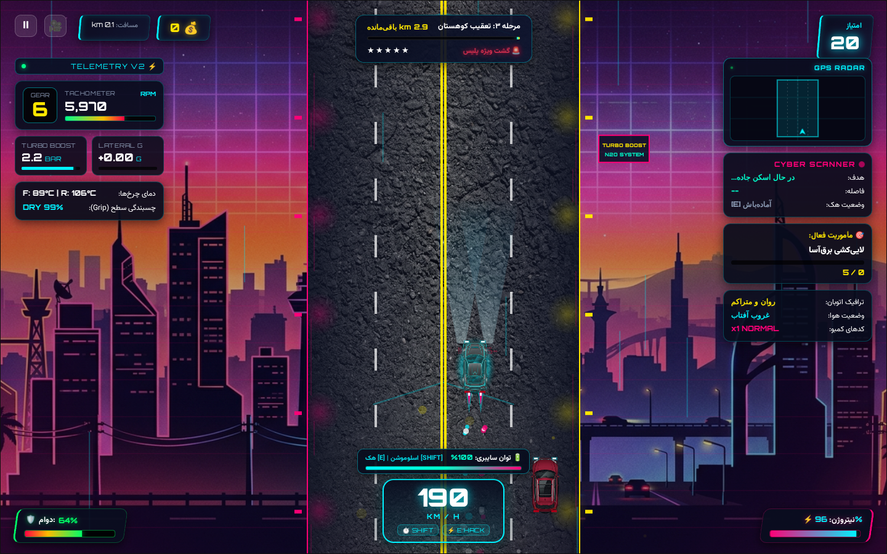
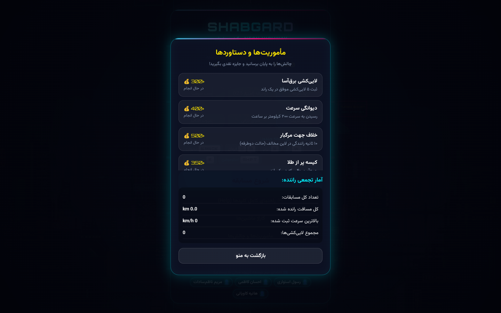

SHABGARD: NEON HIGHWAY شبگرد: بزرگراه نئونی
سند رسمی طراحی فنی، مکانیکی، بصری و صوتی بازی اتومبیلرانی آرکید-سایبرپانک «شبگرد: بزرگراه نئونی»؛ توسعهیافته از صفر بر پایه HTML5 Canvas API و Web Audio API با قابلیتهای تاکتیکی اتساع زمان، هک پالس EMP، داشبورد تلهمتری زنده و نرخ فریم پایدار ۶۰FPS.

خلاصه اجرایی، چشمانداز و ستونهای طراحی
شبگرد: بزرگراه نئونی (SHABGARD: Neon Highway) یک بازی اتومبیلرانی آرکید با ریتم سریع و فضای نئو-نوآر سایبرپانک است. بازیکن در نقش راننده گشت شبانه، با خودروهای ارتقاپذیر در اتوبانهای چهاربانده و پرترافیک با سرعتهای بیش از ۲۵۰ کیلومتر بر ساعت به لاییکشی، ثبت کمبو و فرار از تعقیب پلیس میپردازد.
برخلاف بازیهای رانندگی دوبعدی سنتی که صرفاً به تغییر لاین محدود میشوند، هسته خلاقانه شبگرد بر ترکیب مکانیکهای تاکتیکی سایبری (اتساع زمان ماتریسی و هک پالس EMP)، فیزیک پویا و واکنشگرا و داشبورد تلهمتری زنده استوار است؛ بهطوری که بازیکن همزمان از هیجان آرکید و حس هدایت یک کابین مدرن بهره میبرد.
ستونهای بنیادین طراحی (Core Design Pillars)
سرعت آنی و کنترل میلیثانیهای
شروع فوری مسابقه در سرعت ۸۵ km/h، پشتیبانی همزمان از کلیدهای انگلیسی، جهتنما و چیدمان کیبورد فارسی، به همراه فیزیک مستقل از نرخ فریم.
تصمیمگیری تاکتیکی سایبری
مدیریت مخزن توان سایبری بین اسلوموشن واکنشی برای عبور از ترافیک بسته و شلیک هک/EMP برای کنار زدن خودروها یا از کار انداختن گشت پلیس.
داشبورد تلهمتری و خوانایی بینقص
چیدمان بدون همپوشانی شامل دنده، دور موتور، بوست توربو، شتاب جانبی G، دمای لاستیک، رادار GPS و اسکنر قفل هدف با سازگاری کامل با موبایل.
موتور سبک ۶۰ فریم بدون وابستگی
توسعه کامل از صفر با Canvas2D و Web Audio API بدون نیاز به فایلهای صوتی سنگین، مجهز به کش Offscreen و حالت اختصاصی سیستمهای ضعیف.
حلقه اصلی گیمپلی و ماشین وضعیت
ساختار پیشرفت در بازی از یک حلقه انگیزشی کوتاهمدت (لاییکشی و کمبو در لحظه) و میانمدت (کسب سکه، تکمیل مأموریتها و ارتقای خودرو در گاراژ) تشکیل شده است. شروع سریع با کلید Enter یا دکمه «شروع مسابقه» اصطکاک ورود به بازی را به حداقل میرساند.
ماشین وضعیت مرکزی بازی (GameEngine.setGameState) شش وضعیت مجزا را مدیریت کرده و بهصورت همگام با صفت data-state روی بدنه صفحه نگهداری میکند: عنوان اصلی (title)، مسابقه فعال (playing)، توقف موقت (paused)، تکمیل مرحله (stage_clear)، پایان بازی (gameover) و گاراژ (garage).

حالتهای مسابقه و ساختار مراحل داستانی
۳.۱. حالتهای قابل انتخاب در منو
| حالت مسابقه | شناسه فنی | قوانین و ساختار چالش | ضریب امتیاز |
|---|---|---|---|
| یکطرفه (One-Way) | one_way | اتوبان چهاربانده همجهت با تراکم پیشرونده ترافیک؛ مناسب برای تمرین لاییکشی و ثبت کمبوهای پیاپی. | x1.0 |
| دوطرفه (Two-Way) | two_way | دو لاین سمت چپ دارای ترافیک خلافجهت (جدا شده با خط دوبل زرد). رانندگی در لاین مخالف علاوه بر امتیاز مضاعف، مأموریت «خلاف جهت مرگبار» را پر میکند. | x2.5 |
| بمب سرعت (Speed Bomb) | speed_bomb | هرگاه سرعت خودرو به زیر 75 km/h برسد، شمارنده معکوس ۱۰ ثانیهای بمب فعال و دوربین لرزان میشود؛ حفظ سرعت بالا تایمر را مجدداً شارژ میکند. | چالش بقا |
۳.۲. نقشه پیشرفت ۴ مرحلهای (Career Stages)
در مرحله نخست، آبوهوای انتخابشده توسط کاربر در منو اعمال میشود و از مرحله دوم به بعد هر مرحله با اتمسفر، مسافت هدف و سطح تعقیب پلیس اختصاصی اجرا میگردد. پس از اتمام هر مرحله، بازیکن میتواند وارد مرحله بعد شود یا همان مرحله را در حالت بیپایان (Endless) ادامه دهد.
نئون توکیو
طوفان ساحلی
تعقیب کوهستان
هسته نهایی سایبر
مکانیکهای نوآورانه سایبری (Bullet-Time و هک EMP)
هر دو قابلیت سایبری از یک منبع مشترک به نام مخزن توان سایبری (Cyber Energy) با ظرفیت ۱۰۰ واحد تغذیه میکنند. این منبع بهطور خودکار در زمان عدم استفاده با نرخ +7.5 / sec بازیابی میشود و بازیکن را به مدیریت هوشمندانه ریسک و پاداش وامیدارد.
- اسلوموشن واکنشی (Bullet-Time): هنگام نگه داشتن SHIFT، زمان جهان با درونیابی نرم به ۳۵٪ کاهش مییابد اما فرمان بازیکن با ضریب 0.72 * dt همچنان تیز باقی میماند تا مانورهای میلیمتری میان دو خودرو ممکن شود. همزمان رد سایبری فیروزهای پشت خودرو، خط اسکن ماتریسی و تغییر گام صدای موتور فعال میشود.
- هک مسیر و پالس EMP: اسکنر سایبری بهصورت خودکار نزدیکترین خودروی مقابل را تا فاصله ۴۸۰ پیکسل قفل کرده و با کادر هولوگرافیک و خط لیزری مشخص میکند. شلیک E روی ترافیک معمولی، خودرو را به بیرونیترین لاین (لاین ۰ یا ۳) هدایت میکند و روی گشت پلیس، پالس EMP با موج شوک حلقوی، Hitstop و ازکارافتادگی ۴.۵ ثانیهای ایجاد میکند.

فیزیک خودرو، سامانه آسیب و نگاشت کنترلها
۵.۱. مدل ریاضی حرکت و برخورد
تمام محاسبات حرکتی با دلتا-تایم محدودشده (maxDelta = 0.05s) و ضریب همترازسازی ۶۰ هرتز (dt60 = delta * 60) انجام میشوند تا رفتار خودرو روی نمایشگرهای ۳۰، ۶۰ و ۱۴۴ هرتز کاملاً یکسان باشد.
brakeRate = stats.braking * 55 + 40
نیترو سقف سرعت را ۵۰ km/h افزایش میدهد و در رهاکردن گاز، خودرو با مقاومت ۱۵ واحد/ثانیه به کروز ۸۵–۹۰ km/h بازمیگردد.
vx += (targetVx - vx) * 16 * steerDelta
در هوای بارانی ضریب فرمانپذیری به ۰.۸۵ کاهش مییابد و برخورد با لکه روغن، اسپین سینوسی ۰.۸ ثانیهای ایجاد میکند.
invulnerableTimer = 0.85s · hitstop = 0.055s
برخورد با خودروی خلافجهت یا پلیس آسیب بیشتری وارد میکند و همراه با پرتاب عرضی، لرزش دوربین و فلش قرمز حاشیه صفحه است.
bonus = 100 * combo (combo ∈ [1..5])
هر لاییکشی در بازه ۳.۵ ثانیه کمبو را افزایش داده، ۲ سکه اهدا کرده و جرقه الکتریکی میان دو خودرو شلیک میکند.
۵.۲. نگاشت کامل ورودیهای دسکتاپ و لمسی
| عملیات | کلید اصلی | کلید جایگزین / چیدمان فارسی | رفتار و بازخورد |
|---|---|---|---|
| گاز و شتاب | W | ↑ · ص | افزایش سرعت، پیشروی رو به جلوی خودرو در قاب و صعود دور موتور |
| ترمز | S | ↓ · س | کاهش سریع سرعت، روشنشدن چراغ ترمز، صدای جیر و دود لاستیک |
| فرمان چپ و راست | A / D | ← → · ش ی | تغییر لاین سریع با کجشدن بدنه (Tilt) و کشیدن لمسی در موبایل |
| نیتروژن (N2O) | SPACE | — | افزایش سقف سرعت (+۵۰ km/h)، شعله اگزوز دوگانه و وینیت صورتی |
| اسلوموشن سایبری | SHIFT | چپ یا راست | اتساع زمان ۰.۳۵x، رد شبح و تغییر فیلتر صوتی |
| هک مسیر / EMP | E | F · ث ب | کنار زدن خودروی هدف یا غیرفعالسازی الکتریکی گشت پلیس |
| بوق اضطراری | H | ا | هشدار صوتی و تحریک خودروهای جلویی به تغییر لاین |
| تغییر دوربین | C | ز / دکمه HUD | چرخش بین دید بالا (2D)، سهبعدی تعقیبی و دید داخل کابین |
| توقف / شروع سریع | P / ESC | Enter در منو | توقف تکضرب بدون تداخل کلید و شروع مستقیم از صفحه عنوان |
طراحی رابط کاربری، تلهمتری دسکتاپ و نمایشگر موبایل
رابط کاربری بازی با رویکرد صفر همپوشانی (Zero Overlap) و خوانایی در سرعتهای بالا بازطراحی شده است. در مانیتورهای عریض دسکتاپ، فضای طرفین بزرگراه به دو پنل تخصصی تبدیل میشود و نوار پیشرفت مرحله با شبکه سهستونه دقیقاً در محور مرکزی اتوبان تراز میگردد.
- پنل چپ — Telemetry V2: نمایشگر دنده (GEAR 1–7)، تاکومتر زنده RPM با چیدمان استاندارد LTR و اعداد همعرض (tabular-nums)، فشار بوست توربو (BAR)، سنسور شتاب جانبی (LATERAL G)، دمای پویا برای لاستیکهای جلو و عقب و وضعیت چسبندگی آسفالت (99% DRY / 74% WET).
- پنل راست — GPS Radar و Cyber Scanner: رادار زنده با دید ۲۴۰۰ پیکسل جلوتر بهصورت یکپارچه در بالای پنل راست جایگذاری شده است و زیر آن اسکنر قفل هدف (نام، فاصله به متر و وضعیت هک)، نوار پیشرفت زنده مأموریت فعال و وضعیت محیطی/کمبو قرار دارند.
- خوشه مرکزی پایین: نوار «توان سایبری» با فاصله ایمن بالای باکس سرعتسنج دیجیتال چیده شده و گیج دوام (HP) در چپ و نیتروژن در راست متقارن هستند.
تجربه واکنشگرا در صفحهنمایشهای کوچک و موبایل
در عرضهای زیر 1120px پنلهای جانبی بهطور خودکار مخفی میشوند تا میدان دید اتوبان مسدود نشود. در عرضهای موبایل (≤ 680px مانند 390×844)، نوار مرحله زیر ردیف امتیاز میآید و گیجهای پایین با چیدمان فشرده و بدون بریدگی حاشیه در کنار سرعتسنج جای میگیرند. همچنین هدایت خودرو با کشیدن انگشت روی صفحه لمسی فعال است.
تأیید هندسی در مرورگر: در تست خودکار ابعاد 390×844، حاشیه چپ و راست دقیقاً ۶ پیکسل، فاصله بین گیجها ۱۲ پیکسل و میزان سرریز یا تداخل صفر ثبت شده است.

هوش مصنوعی ترافیک و تاکتیک تعقیب پلیس
ماژول TrafficManager رفتار ۵ کلاس وسیله نقلیه را مدیریت میکند. برای جلوگیری از باگ رایج فرو رفتن خودروها درون یکدیگر، هر فریم یک گذر دو مرحلهای اجرا میشود: نخست کاهش سرعت پیشگیرانه در فاصله ایمن (۲۴۰ پیکسل) و تلاش برای سبقت با روشنکردن چراغ راهنمای چشمکزن کهربایی، و دوم اعمال نیروی جداسازی کشسان در صورت نزدیکی بیش از حد.
| کلاس خودرو | ابعاد (px) | سرعت پایه | نقش و الگوی رفتاری |
|---|---|---|---|
| سدان شهری (Sedan) | 44 × 82 | 70 km/h | ترافیک متعادل لاینهای میانی با واکنش سریع به بوق بازیکن |
| شاسیبلند (SUV) | 48 × 88 | 65 km/h | عرض بیشتر و پایداری بالاتر هنگام تغییر لاین |
| کامیون سنگین (Truck) | 52 × 140 | 50 km/h | بدنه طویل که دید لاین را میبندد و بازیکن را وادار به مانور میکند |
| کوپه اسپرت (Sports) | 46 × 84 | 90 km/h | حرکت تندتر و تغییر لاین فعال در ترافیک سبک |
| رهگیر پلیس (Interceptor) | 48 × 90 | 115+ km/h | ظهور در سطح خطر ۲ به بالا، تعقیب محاصرهای دوطرفه (Flanking) و آژیر سقفی |
سطح خطر پویا (Heat Level 0–5): علاوه بر سطح خطر پایه هر مرحله، رانندگی با سرعت بالای ۱۳۵ و ۱۸۵ km/h و ثبت ۳ لاییکشی یا بیشتر، ستارههای تعقیب را افزایش میدهد. واحدهای پلیس با شمارش تکگذره (policeSlot) جناح چپ و راست بازیکن را بهصورت مکمل مسدود میکنند تا تنها راه گریز، استفاده هوشمندانه از نیترو یا شلیک پالس EMP باشد.
ناوگان خودروها، گاراژ و سیستم تیونینگ
گاراژ بازی شامل ۵ خودروی متمایز از هاچبک شهری رایگان تا سوپراسپرت آیندهنگر است. بازیکن میتواند هر یک از شاخصهای فنی را در ۵ سطح ارتقا دهد (هزینه هر سطح: (level + 1) × 200 سکه) و رنگ بدنه (۸ رنگ) و نور زیر شاسی (۶ حالت Underglow) را با اعمال زنده روی اسپرایت خودرو شخصیسازی کند.
| نام خودرو | کلاس | قیمت (سکه) | سرعت پایه | شتاب | فرمان | ترمز | نیترو |
|---|---|---|---|---|---|---|---|
| Cyber Hatch | اسپرت شهری | رایگان | 140 km/h | 5.5 | 6.5 | 6.0 | 5.0s |
| Muscle GT 69 | ماسل کلاسیک | 800 | 165 km/h | 7.2 | 5.8 | 6.5 | 6.0s |
| Tokyo RX-Drift | تیونینگ ژاپنی | 1,800 | 190 km/h | 8.0 | 8.5 | 7.8 | 7.0s |
| Interceptor V8 | گشت پلیس ویژه | 3,200 | 215 km/h | 8.8 | 8.0 | 8.5 | 8.0s |
| Hyper Cyber 2077 | سوپراسپرت آینده | 5,500 | 250 km/h | 9.8 | 9.5 | 9.2 | 10.0s |
ضرایب ارتقای هر سطح (حداکثر ۵ سطح): سرعت نهایی +10 km/h، شتاب اولیه +0.4، فرمانپذیری +0.35، ترمز +0.4 و ظرفیت نیترو +0.8s. تمام خریدها، ارتقاها و رنگهای انتخابی در localStorage ذخیره میشوند.

سیستم آبوهوا، گرافیک رویهای و جلوههای ویژه (VFX)
تمامی تصاویر خودروها در لحظه بارگذاری بهصورت خودکار پردازش میشوند: پسزمینه استودیویی سیاه با الگوریتم کروماکی نرم حذف شده، کادر واقعی بدنه توسط تابع تستشده findAlphaBounds برش میخورد و در بافت استاندارد 128×256 کش میشود. این کار علاوه بر حذف کامل کادرهای مربعی اطراف خودرو، سرعت رسم را چندین برابر میکند.
| فضای جوی | پالت نورپردازی و پسزمینه | تأثیر روی فیزیک و ذرات |
|---|---|---|
| شب نئونی (Night) | آسمانخراشهای تاریک نئو-کیوتو با گاردریل فیروزهای/سرخابی و بازتاب نور چراغها | حداکثر چسبندگی (99% DRY)، مخروط نور چراغ جلو و خطوط سرعت |
| بارانی شدید (Rain) | خیابان مرطوب بارانی با روشنایی تیره آسفالت و هاله مه اطراف چراغها | افت چسبندگی به 74% WET (ضریب ۰.۸۵ فرمان)، باران یکپارچه و پاشش آب تایر |
| غروب نئونی (Sunset) | افق گرم بنفش-نارنجی سینثویو با گاردریل سرخابی و طلایی | کنتراست دید بالا برای سرعتهای ۲۲۰+ km/h و بازتاب طلایی حاشیه جاده |


حس ضربه و پولیش بصری (Game Feel & Juice)
- توقف لحظهای ضربه (Hitstop): مکث ۵۵ میلیثانیهای در برخورد با ترافیک و ۴۵ میلیثانیهای هنگام انفجار EMP روی پلیس، در حالی که لرزش دوربین و فلش رنگی زنده میمانند.
- وینیتها و فلشهای پیرامونی پیشرندرشده: فلش قرمز حاشیه هنگام آسیب، فلش آبی هنگام هک، وینیت صورتی در حالت نیترو و وینیت آبی در اسلوموشن.
- جزئیات زنده جاده: استخرهای نور شعاعی نرم کنار گاردریل، جرقههای الکتریکی هنگام Near Miss، دود و جرقه کاپوت در دوام زیر ۵۰٪ و ۲۵٪، و راهنمای چشمکزن ماشینهای در حال تغییر لاین.
موتور سنتز صوتی رویهای (Web Audio API)
ماژول js/audio.js بدون نیاز به حتی یک فایل صوتی خارجی MP3 یا WAV، تمامی موسیقی متن و جلوههای صوتی بازی را بهصورت بلادرنگ توسط نوسانسازها و فیلترهای Web Audio API تولید میکند.
سکوئنسر ۱۶ استپی Retro Synthwave
اجرا در گام ر مینور (D minor) با تمپو 124 BPM شامل کیک ساببیس (۱۳۰ تا ۳۵ هرتز)، اسنیر فیلتر بالاگذر، هایهت، بیس دندانهارهای و آرپژیوی نئونی با کنترل مستقل ولوم و کلید قطع/وصل.
صدای موتور، نیترو، اسلوموشن و EMP
موتور با موج دندانهارهای همگام با سرعت و دنده (۴۵ تا ۲۸۰ هرتز)، افت فرکانسی و فیلتر Low-Pass در حالت اسلوموشن، صدای جیر ترمز، بوق دوگانه، آژیر پلیس، سوت Near Miss و انفجار ساببیس EMP.
اقتصاد بازی، آیتمهای جادهای و مأموریتها
منبع اقتصادی بازی سکههای طلایی هستند که از طریق چهار مسیر به دست میآیند: جمعآوری سکه روی آسفالت (+۱۰ سکه و +۲۵۰ امتیاز)، لاییکشی (+۲ سکه)، هک ترافیک/پلیس (+۲ تا +۵ سکه)، عبور از مراحل (۵۰۰ تا ۲۵۰۰ سکه) و تکمیل ۸ مأموریت چالشی. علاوه بر سکه، کپسول نیترو (+۳۵٪) و جعبه تعمیر (+۳۰ HP) نیز در جاده ظاهر میشوند.
| شناسه | عنوان مأموریت | شرط تکمیل | نوع | پاداش |
|---|---|---|---|---|
| near_miss_5 | لاییکشی برقآسا | ثبت ۵ لاییکشی موفق در یک راند | تک راند | +300 |
| speed_200 | دیوانگی سرعت | رسیدن به سرعت ۲۰۰ کیلومتر بر ساعت | تک راند | +400 |
| oncoming_10s | خلاف جهت مرگبار | ۱۰ ثانیه رانندگی در لاین مخالف (حالت دوطرفه) | تک راند | +500 |
| coins_40 | کیسه پر از طلا | جمعآوری ۴۰ سکه در یک راند | تک راند | +350 |
| total_dist_5k | سفر در اتوبان | طی کردن مجموع ۵ کیلومتر مسافت تجمعی | تجمعی | +600 |
| nitro_master | آتشافروز اتوبان | ۲۰ ثانیه مصرف تجمیعی نیتروژن | تجمعی | +450 |
| cyber_hack_3 | هکر سایبری اتوبان | ۳ بار هک موفق ترافیک یا پلیس در یک راند | تک راند | +550 |
| slowmo_dodge | واکنش ماتریسی | ۶ ثانیه ماندن در حالت اسلوموشن در یک مسابقه | تک راند | +400 |

معماری نرمافزار و مهندسی بهینهسازی ۶۰ فریم
پروژه با معماری ماژولار بدون فریمورکهای سنگین پیادهسازی شده تا حجم پایین، زمان بارگذاری زیر یک ثانیه و پایداری اجرا روی سیستمهای ضعیف و لپتاپهای بدون کارت گرافیک مجزا تضمین شود.
| ماژول | مسئولیت اصلی در معماری |
|---|---|
| js/sim-utils.js | توابع خالص و تستشده (Unit Tested) شامل محدودسازی دلتا، تلهمتری، سطح خطر، برخورد جعبهای، Near Miss و برش آلفای اسپرایتها |
| js/game.js | موتور اصلی (GameEngine)، حلقه rAF، کشهای Offscreen، رندر جاده/محیط/رادار، مدیریت ورودی و چرخه مراحل |
| js/cars.js | کاتالوگ ۵ خودرو، سیستم ارتقا، کروماکی و برش خودکار اسپرایت، کش نور زیر ماشین، مخروط چراغ جلو و رنگآمیزی زنده بدنه |
| js/traffic.js | مدیریت اسپاون، هوش مصنوعی تغییر لاین با راهنما، فیزیک ضدتداخل و الگوریتم محاصره پلیس |
| js/particles.js | سیستم ذرات با سقف ثابت (۱۴۰ عادی / ۵۵ سبک)، حذف O(1)، باران و خطوط سرعت دستهبندیشده و جرقههای Near Miss |
| js/audio.js | سنتز رویهای موسیقی سینثویو و تمامی افکتهای صوتی با Web Audio API |
| js/missions.js | ردیابی ۸ مأموریت تکراند و تجمعی، آمار عمر راننده و ذخیرهسازی پایدار در مرورگر |
| server.js / electron-main.js | سرور HTTP امن محلی با محافظت مسیر، و بستهبندی دسکتاپ ویندوز ۶۴ بیتی (Electron + لانچر C#) |
تکنیکهای کلیدی حذف لگ و افت فریم
- حذف کامل backdrop-filter از روی کانواس فعال: حذف فیلترهای ماتکننده زنده که روی GPUهای مجتمع باعث افت شدید فریم میشدند.
- حذف ctx.clip() و رسم اضافی آسفالت: کاهش ناحیه رسم آسفالت از ۱۲ برابر کل صفحه به دقیقاً مساحت عرض جاده، و رسم آسمان تنها در حاشیههای قابل مشاهده چپ و راست اتوبان.
- پیشرندر کامل در کانواس Offscreen: کشکردن آسمان مقیاسشده، گرادیان جاده، نورهای شعاعی کنار جاده، نور زیر خودرو، مخروط چراغ جلو و وینیتهای نیترو/اسلوموشن (صفر تخصیص گرادیان در هر فریم).
- کنترل نرخ بهروزرسانی DOM: کشکردن رفرنس المانهای HUD، بررسی تغییر مقدار (Dirty Check) و محدودکردن آپدیت متنهای HUD به ۱۶ هرتز و رادار GPS به ۱۵ هرتز.
- حالت سبک و پرسرعت در تنظیمات (Low-Spec Mode): کلید اختصاصی در منوی تنظیمات که سقف ذرات را به ۵۵ کاهش میدهد و بیلبوردها، بافت آسفالت و وینیتهای اضافه را برای سیستمهای بسیار ضعیف خاموش میکند.
- تضمین کیفیت خودکار: پوشش ۸ تست واحد (node --test) روی منطق شبیهسازی و سرور به همراه بررسی نحو تمام فایلها و راستیآزمایی زنده در مرورگر.
ماتریس نقشهای تیم و نقشه راه توسعه آتی
| عضو تیم | نقش تخصصی | بخشهای کلیدی و تحویلیها |
|---|---|---|
| رسول استواری | معمار موتور و یکپارچهساز ارشد | معماری GameEngine، ماشین وضعیت، مکانیکهای اسلوموشن و هک EMP، تجمیع ماژولها و کنترل کیفیت نهایی |
| احسان کاظمی | مهندس فیزیک و استقرار دسکتاپ | مدل حرکتی خودرو، کنترلر کیبورد دسکتاپ، بستهبندی اجرایی Electron و لانچر ویندوز (Launcher.cs) |
| مریم ناظمسادات | توسعهدهنده گرافیک، ذرات و HUD | طراحی رابط کاربری سایبرپانکی، سیستم ذرات و آبوهوا، پردازش اسپرایت خودروها و جلوههای نور نئونی |
| هانیه کاویانی | مهندس هوش مصنوعی، صوت و گیمیفیکیشن | هوش مصنوعی ترافیک و تعقیب پلیس، سنتز صوتی سینثویو در Web Audio API، سیستم مأموریتها و اقتصاد گاراژ |
افق توسعه در فاز بعدی (Roadmap)
- پشتیبانی از دسته بازی (Gamepad API): افزودن کنترل آنالوگ فرمان و لرزش هپتیک دسته در برخوردها و نیترو.
- تابلوی رکوردهای آنلاین (Global Leaderboard): ثبت و مقایسه رکوردهای سرعت و مسافت بازیکنان از طریق سرور ابری.
- نبرد با باس در پایان مرحله چهارم (Boss Encounter): اضافه کردن کامیون زرهی یا پهپاد تعقیبگر با الگوی حمله مرحلهای در انتهای مرحله «هسته نهایی سایبر».